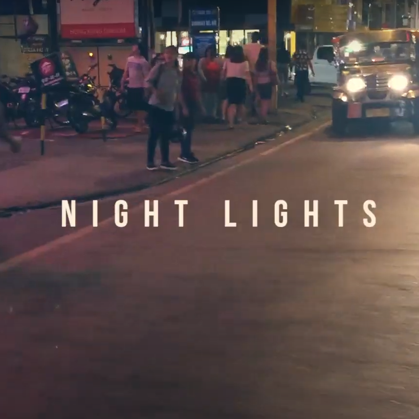

Ian Carl Gimenez
Ian Carl Gimenez: Software Engineer Architect, Digital Workplace Officer, and Workflow Automation Expert.
Ian Carl Gimenez: Software Engineer Architect, Digital Workplace Officer, and Workflow Automation Expert.





I am a Systems Architect and Creative Designer with a 15-year foundation in ICT and application development & support. My career has been defined by transforming complex, fragmented processes into seamless digital environments.
The Precision: My background in workflow automation and process optimization ensures that every system I build is robust, scalable, and engineered for high-level performance.
The Perspective: Over the years, I have integrated a minimalist user-centered design lens into my technical work. I bridge the gap between back-end logic and front-end aesthetics to ensure the interaction is as intuitive as the system is sound.
Logic meets creativity. Process meets polish. Explore my work and let's create something extraordinary together.
| The Technical Side | The Creative Side |
|---|---|
| Workflow Automation | UI/UX Design |
| Business Process Optimization | Brand Identity & Typography |
| Application Flow Development | Video Editing & Motion Graphics |
| System Architecture | Minimalist Aesthetic |
Multi-disciplinary professional with over 10 years of experience across telephony operations, application support, and workflow automation, combined with a strong background in graphic design, video editing, and branding. Skilled in developing efficient systems and creating visually compelling content that aligns with business goals. Experienced in building automation solutions using tools such as Google AppSheet and Apps Script to streamline processes and improve productivity.
Currently expanding into UI/UX design, with a growing focus on creating intuitive and user-centered digital experiences that bridge functionality and visual design.
Full Stack Web Development
Oct 2018 - Mar 2019
Zuitt Philippines
Professional Certificate in Advance Graphic Design
Dec 2013 - Dec 2014
Sessions College
Bachelor of Science in Computer Science
Jun 2004 - Apr 2008
STI College Fairview
Digital Workplace Officer
Nov 2024 to Mar 2026
UBX
Infrastructure Engineer / Service Delivery Lead
Jul 2016 to Aug 2024
Indra Sistemas S.A.
Freelance Creative Specialist & UI/UX Designer
Jan 2016 to Present
Self-Employed
Field Applications Engineer
Oct 2013 to May 2016
VTechnologist Pte. Ltd. Singapore
Field Applications Engineer
Jul 2004 to Sep 2013
DTSI Group
 Figure 1.0: Baseline analysis of the legacy ordering flow highlighting isolated product customization counters and unformatted physical address fields.
Figure 1.0: Baseline analysis of the legacy ordering flow highlighting isolated product customization counters and unformatted physical address fields.
 Figure 1.1: Cognitive friction points — flat, dense text-based menu categorization and isolated quantity controls requiring excessive scrolling.
Figure 1.1: Cognitive friction points — flat, dense text-based menu categorization and isolated quantity controls requiring excessive scrolling.
 Figure 1.2: Fragmented native data streams on the legacy payment modules leading to visual noise and unparsed data strings.
Figure 1.2: Fragmented native data streams on the legacy payment modules leading to visual noise and unparsed data strings.
 Figure 2.0: Restructured user experience demonstrating heavy visual restraint, cinematic imagery, and component-based variant selection.
Figure 2.0: Restructured user experience demonstrating heavy visual restraint, cinematic imagery, and component-based variant selection.
 FFigure 2.1: Transformation of a fragmented path-to-purchase into a clean, normalized ecosystem with predictive UI modules.
FFigure 2.1: Transformation of a fragmented path-to-purchase into a clean, normalized ecosystem with predictive UI modules.
 Figure 1.0: The original sheet caused major efficiency and collaboration bottlenecks. Manual data filtering, separate graph creation, and conflicting live filter views during shared access slowed down critical business decisions.
Figure 1.0: The original sheet caused major efficiency and collaboration bottlenecks. Manual data filtering, separate graph creation, and conflicting live filter views during shared access slowed down critical business decisions.
 Figure 2.0: A centralized landing view utilizing high-contrast, status-driven scorecards. Key metrics like Upcoming Expiry (in 20 days) are highlighted in active alert colors to prevent cognitive overload and guide immediate user prioritization
Figure 2.0: A centralized landing view utilizing high-contrast, status-driven scorecards. Key metrics like Upcoming Expiry (in 20 days) are highlighted in active alert colors to prevent cognitive overload and guide immediate user prioritization
 Figure 2.1: Deep-dive analytics for the expiring pipeline. By mapping numerical values directly to color-coded horizontal bars and double pie charts, users can instantly measure active risk across different corporate subsidiaries
Figure 2.1: Deep-dive analytics for the expiring pipeline. By mapping numerical values directly to color-coded horizontal bars and double pie charts, users can instantly measure active risk across different corporate subsidiaries
 Figure 2.3: Historical tracking of completed contracts. I introduced neutral tone palettes and soft-rose compliance tags to differentiate standard project completions from legal offboarding drivers without causing UI stress
Figure 2.3: Historical tracking of completed contracts. I introduced neutral tone palettes and soft-rose compliance tags to differentiate standard project completions from legal offboarding drivers without causing UI stress
 Figure 2.4: A granular drill-down data table with multi-tier filter controls. This interface transitions users from macro-level insights to micro-level contract management, featuring localized 'Back to Overview' navigation for seamless backtracking.
Figure 2.4: A granular drill-down data table with multi-tier filter controls. This interface transitions users from macro-level insights to micro-level contract management, featuring localized 'Back to Overview' navigation for seamless backtracking.


 Figure 1.0: Launch screen for 'Worklog Manager,' introducing the core brand identity with a clean, high-contrast visual design that emphasizes accessibility and clarity.
Figure 1.0: Launch screen for 'Worklog Manager,' introducing the core brand identity with a clean, high-contrast visual design that emphasizes accessibility and clarity.
 Figure 2.0 The primary 'Overview' dashboard, utilizing distinct, color-coded components to provide immediate visual feedback on weekly hours and project distribution.
Figure 2.0 The primary 'Overview' dashboard, utilizing distinct, color-coded components to provide immediate visual feedback on weekly hours and project distribution.
 Figure 3.0: Core 'Time Log' interface, designed with clear segmentation for day types and integrated selectors, ensuring efficient data entry. This screen shows the standard workflow for logging individual days.
Figure 3.0: Core 'Time Log' interface, designed with clear segmentation for day types and integrated selectors, ensuring efficient data entry. This screen shows the standard workflow for logging individual days.
 Figure 4.0: Introduction of the 'Bulk-Generate' feature, a workflow optimization that allows users to populate and review multiple logs in a single batch process based on a defined date range.
Figure 4.0: Introduction of the 'Bulk-Generate' feature, a workflow optimization that allows users to populate and review multiple logs in a single batch process based on a defined date range.
 Figure 5.0: Architected a multi-state lifecycle that transitions local drafts into a formalized monthly audit. Features state-aware indicators (Approved, Pending, Rejected) and integrated reviewer feedback loops to streamline asynchronous corrections and ensure payroll data integrity.
Figure 5.0: Architected a multi-state lifecycle that transitions local drafts into a formalized monthly audit. Features state-aware indicators (Approved, Pending, Rejected) and integrated reviewer feedback loops to streamline asynchronous corrections and ensure payroll data integrity.
 Figure 6.0: The complete 'History' management system. This view demonstrates how submissions are tracked and organized, utilizing the prototyped date range component to filter and manage historical data.
Figure 6.0: The complete 'History' management system. This view demonstrates how submissions are tracked and organized, utilizing the prototyped date range component to filter and manage historical data.
 Figure 7.0: Focused 'User Profile' view, consolidating account-level settings, primary work shift definitions, and managerial contact information in an easily accessible single screen.
Figure 7.0: Focused 'User Profile' view, consolidating account-level settings, primary work shift definitions, and managerial contact information in an easily accessible single screen.